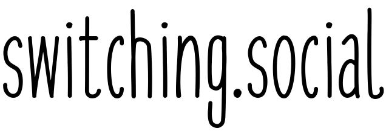

простые в использовании и ориентированные на конфедициальность альтернативы
Выберите сайт или приложение, которое вы хотите заменить:
Альтернативы Facebook, VK и Twitter
Альтернативы Instagram
Альтернативы YouTube
Альтернативы WhatsApp, Messenger и Skype
Альтернативы Gmail
Альтернативы поиску Google
Альтернативы Google Play
Альтернативы Google Картам
Альтернативы Google Диску и Google Документам
Альтернативы Medium
Альтернативы MeetUp
Альтернативы Amazon Books и Kindle
Альтернативы Chrome
Альтернативы Windows
Альтернативы Steam
Альтернативы Minecraft
Альтернативы Instagram
Альтернативы Change.org
Альтернативы Google Новостям
Альтернативы Google Аналитике
Альтернативы Google Формам
Альтернативы Patreon
Альтернативы Microsoft Office
Альтернативы Adobe Creative Cloud
Альтернативы Slack
Альтернативы интернету
Альтернативы всё-в-одном
–
Руководство по переходу
Альтернативы для продвинутых пользователей
На рассмотрении (bubbling under)
Смартфоны Fairtrade
Часто задаваемые вопросы
Подписаться на switching.social в Mastodon (на англ.)